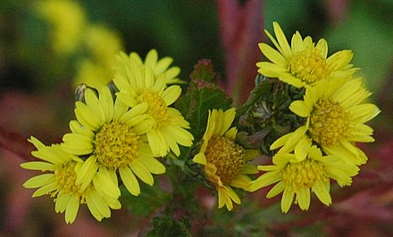
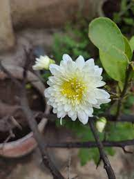

Chrysanthemums (/krɪˈsænθəməm/), sometimes called mums or chrysanths,[5] are flowering plants of the genus Chrysanthemum in the family Asteraceae.[4] They are native to East Asia and northeastern Europe. Most species originate from East Asia and the center of diversity is in China.[6] Countless horticultural varieties and cultivars exist.
The compound inflorescence is an array of several flower heads, or sometimes a solitary head. The head has a base covered in layers of phyllaries. The simple row of ray florets is white, yellow, or red. The disc florets are yellow. Pollen grains are approximately 34 microns.[citation needed] The fruit is a ribbed achene.
Historical painting of chrysanthemums from the New International Encyclopedia, 1902 Pollen The genus Chrysanthemum are perennial herbaceous flowering plants, sometimes subshrubs. The leaves are alternate, divided into leaflets and may be pinnatisect, lobed, or serrate (toothed) but rarely entire; they are connected to stalks with hairy bases.[7]
The compound inflorescence is an array of several flower heads, or sometimes a solitary head. The head has a base covered in layers of phyllaries. The simple row of ray florets is white, yellow, or red. The disc florets are yellow. Pollen grains are approximately 34 microns.[citation needed] The fruit is a ribbed achene.[8][7] Etymology[edit] The name "chrysanthemum" is derived from the Ancient Greek: χρυσός chrysos (gold) and Ancient Greek: ἄνθεμον anthemon (flower).[9][10]
The genus Chrysanthemum was first formally described by Linnaeus in 1753, with 14 species, and hence bears his name (L.) as the botanical authority.[11] The genus once included more species, but was split several decades ago[when?] into several genera, putting the economically important florist's chrysanthemums in the genus Dendranthema. The naming of these genera has been contentious, but a ruling of the International Botanical Congress in 1999 changed the defining species of the genus to Chrysanthemum indicum, restoring the florist's chrysanthemums to the genus Chrysanthemum.[citation needed] Genera now separated from Chrysanthemum include Argyranthemum, Glebionis, Leucanthemopsis, Leucanthemum, Rhodanthemum, and Tanacetum Chrysanthemums (Chinese: 菊花; pinyin: Júhuā) were first cultivated in China as a flowering herb as far back as the 15th century BC.[13] Over 500 cultivars had been recorded by 1630.[8] By 2014 it was estimated that there were over 20,000 cultivars in the world and about 7,000 cultivars in China.[14] The plant is renowned as one of the Four Gentlemen (四君子) in Chinese and East Asian Art. The plant is particularly significant during the Double Ninth Festival.[citation needed]